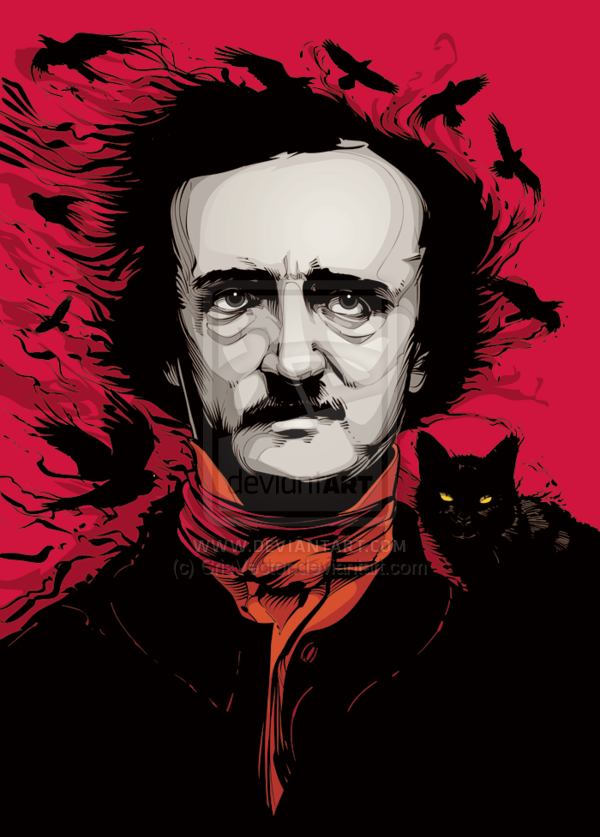
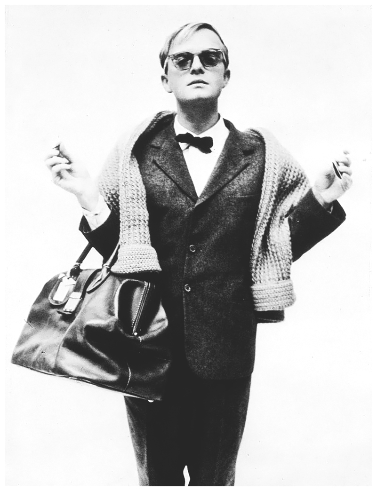

Edgar Allan Poe Fue uno de los escritores de novelas goticas mas conocidos además de un escritor
de relatos cortos reconocido, entre sus novelas mas famosas se encuentran el gato negro,
el cuervo, el corazón delatador, El misterio de Marie Roget, entre otros.

Este escritor nacio en Boston,Estados Unidos en 1809 , publico su primer novela despues de que su padre lo obligo a trabajar este se mudo a Boston estados unidos y fue entonces cuando publico su primer novela , despues de este momento continuo
escribiendo y fue cuando publico su tercer novela , cuando decidio mudarse a Baltimore con su tia y su prima virginia.
La ultima se convertiría en su esposa, se casaron cuando esta tan solo tenia 14 años de edad.
En 1847 su esposa moriría, lo cual desato que el escritor agravara su tendencia al alcoholismo y al consumo de drogas,
este escritor y redactor murió un 7 de octubre de 1849 victima de lo que al parecer fue un ataque cerebral.
Truman Capote Truman capote fue un periodista y escritor estadounidense , reconocido por su novela desayuno en tifanny’s,
la cual cuenta la historia de amistad entre otoño de 1943 y otoño de 1944 entre la protagonista,
Holiday ("Holly") Golightly, y un narrador anónimo que quiere ser escritor.

Los cuales son inquilinos de un edificio en el Upper East Side de Manhattan.
Publico su primer novela Otras Voces y otros caminos en 1948, la cual es una de las primeras novelas
en las que se planta el tema de la homosexualidad, el cual era un tabu para su época.
La novela por la cual se le reconoce Desayuno en tifanny’s la
que cabe recalcar es una de sus mas famosas novelas fue publicada en 1958,
y continuo publicando hasta mi 1966.
Y en 1950 se dedico al periodismo, escribiendo noticias para la famosa revista del conejito (Playboy).
Capote murió en Bel Air, Los Ángeles, el 25 de agosto de 1984, a los 59 años de cáncer de hígado.